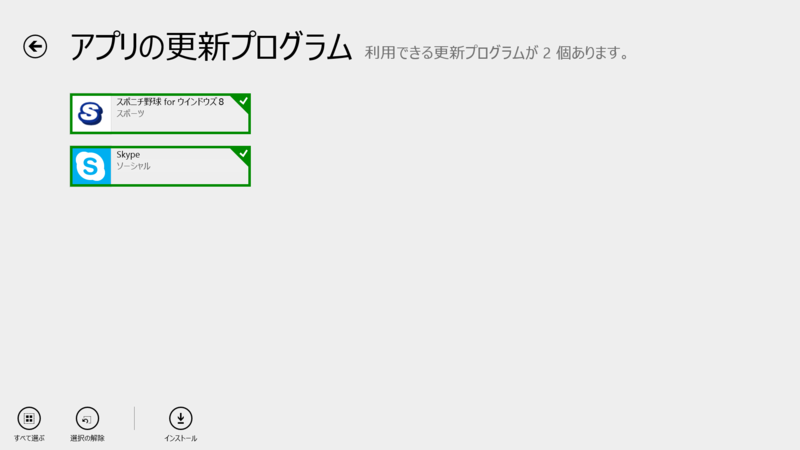
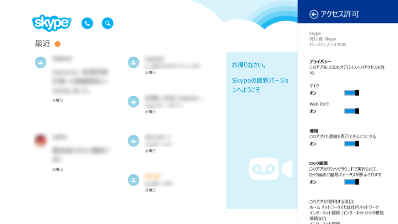
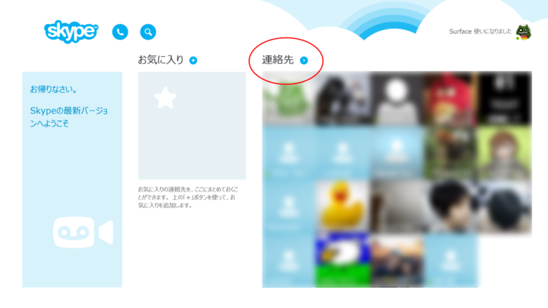
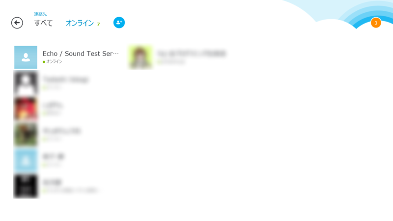
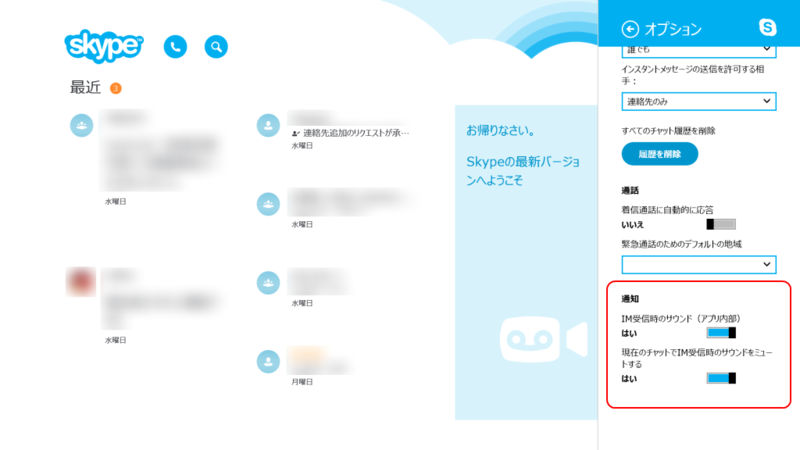

Skype for Modern Windows 2.5
公開日：

Skype for Modern Windows 2.5

2.4.0.1007 からの変更点（「Windows 8.1」にぴったりの「Skype」、「Skype for Windows 8.1」が正式にリリース - 窓の杜 は 2.2.0.1009）
新機能： － 全般的な修正
これだけだとさっぱりわからないのだけど、幸いなことに Skype for Modern Windows 2.5: Get Closer to People and Hear Less Noise – - Skype Blogs に詳細が書いてある。関係ないけど、「Skype for Windows 8.1」っていうのやめて、「Skype for Modern Windows」って呼ぶようにしたのかな。“for Windows”だの（デスクトップと違うん？）“for Windows 8”だの（8.1 でも使えんの？ 8.2 は？）“for Metro”だの（禁止―――ッ！）、テンでバラバラに呼ばれている Windows ストア アプリ。そろそろ統一された呼び方が普及してほしいのだけど、“for Modern Windows”はなかなかいいんじゃないかと思うのです。
People（連絡先）画面の追加

メイン画面の“連絡先”ラベルの右にあるボタンを押すと、新設の“連絡先”画面に遷移する。

ここでは、
- ユーザーの追加（アプリバーまたは“オンライン”ラベル右隣のボタンから）
- オンラインユーザーのフィルタリング
などが可能。まぁ、ユーザーが多くなってくると便利なのかな。
チャットサウンドのミュート

（一番下のオプションが追加）
会話中に他のユーザーからチャットがあっても、通知音が鳴らないように設定できるようになった。彼女とラブラブ会話中に愛人から IM が飛んできてもバレない？ バレンタインデーにぴったりのアップデートやな（棒読み